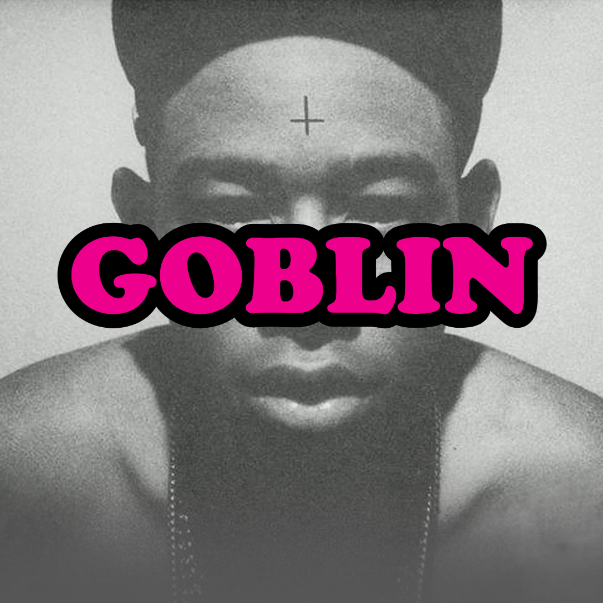
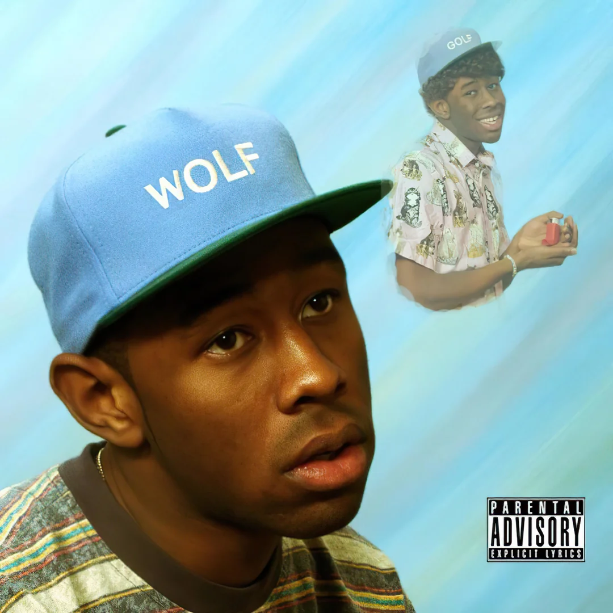
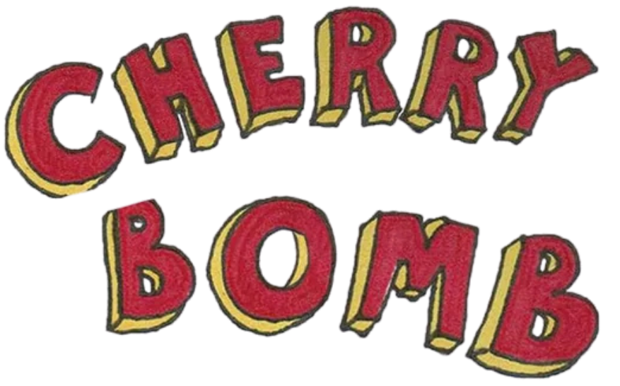
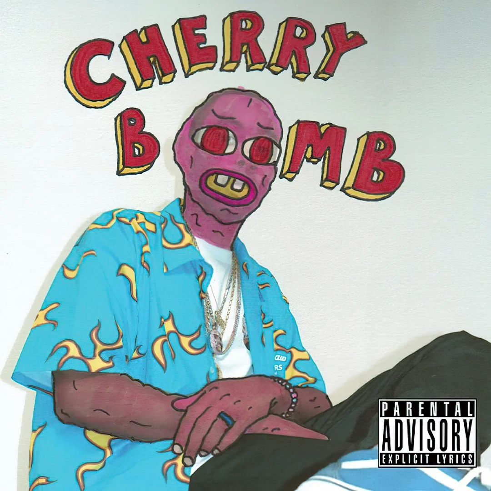
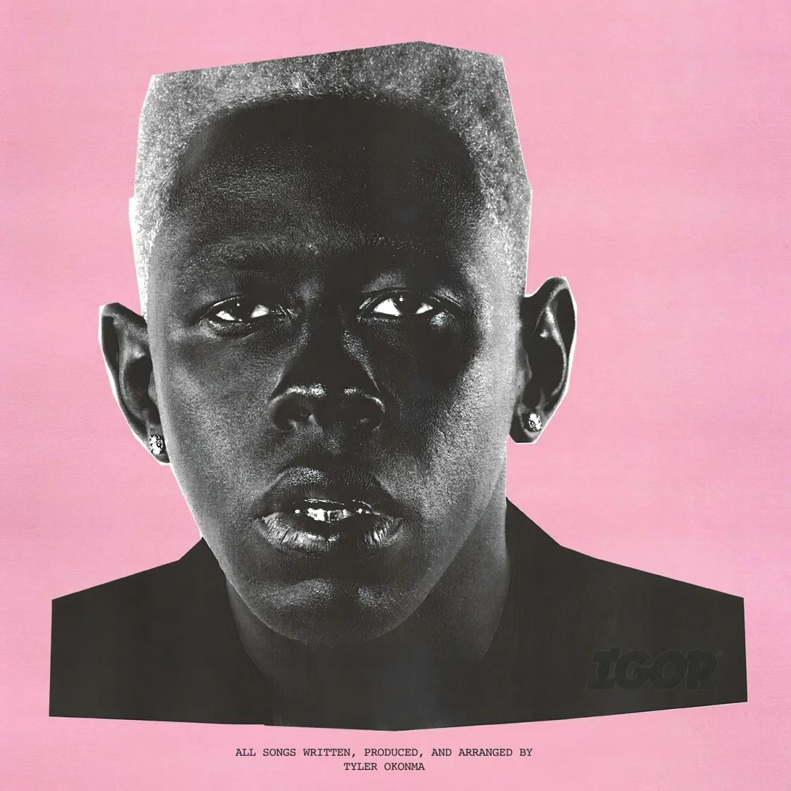
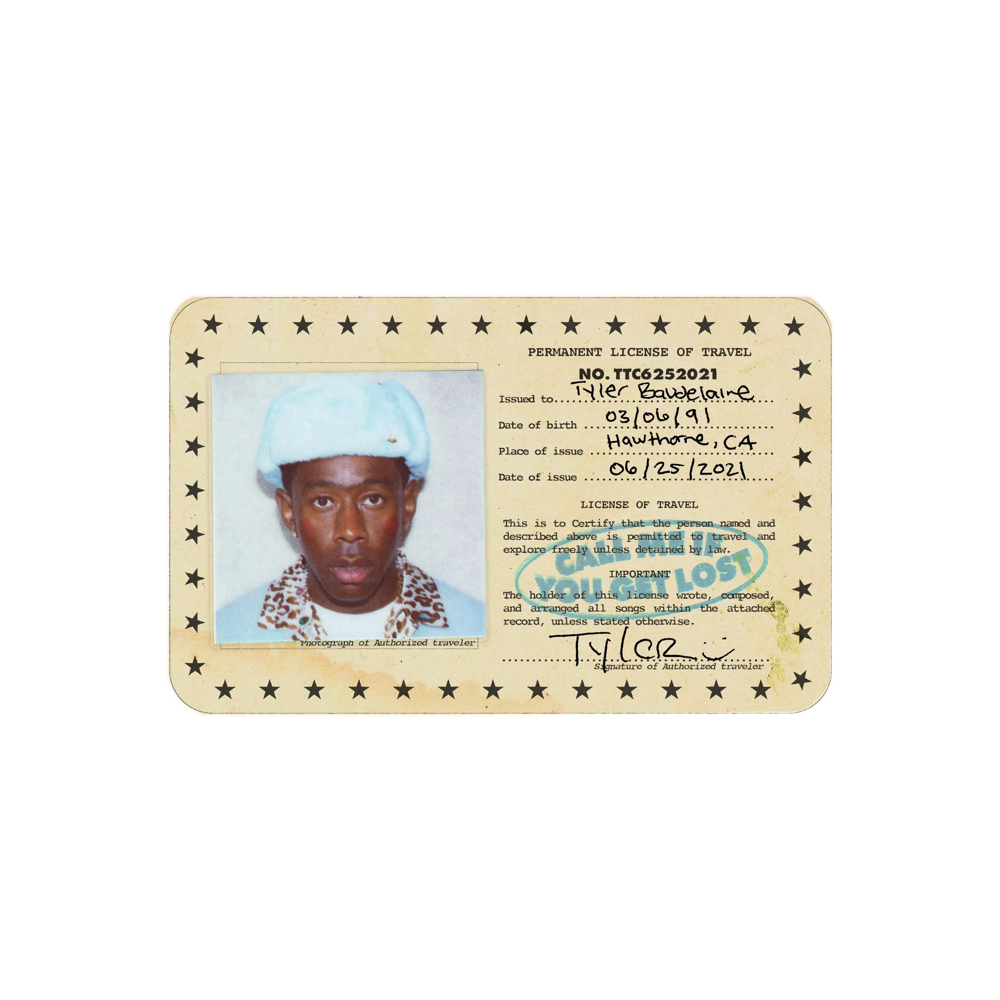
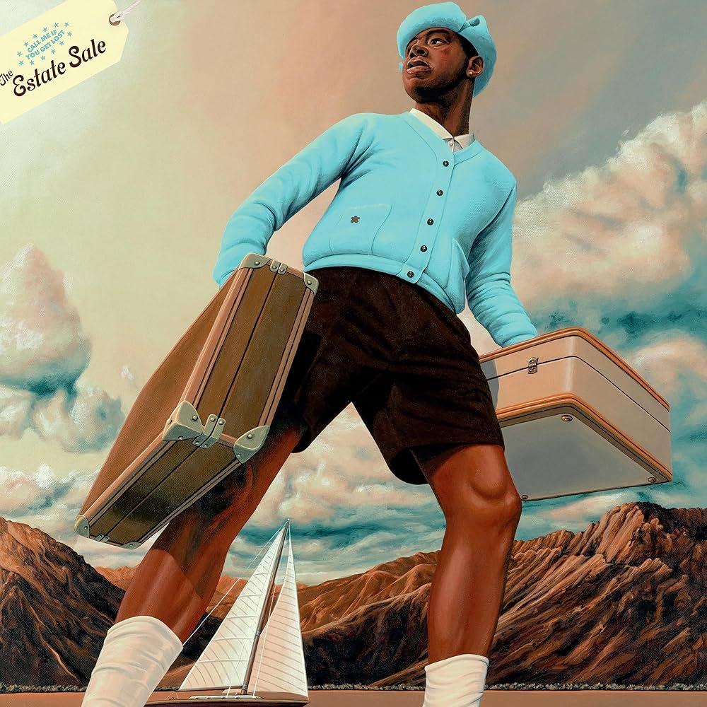
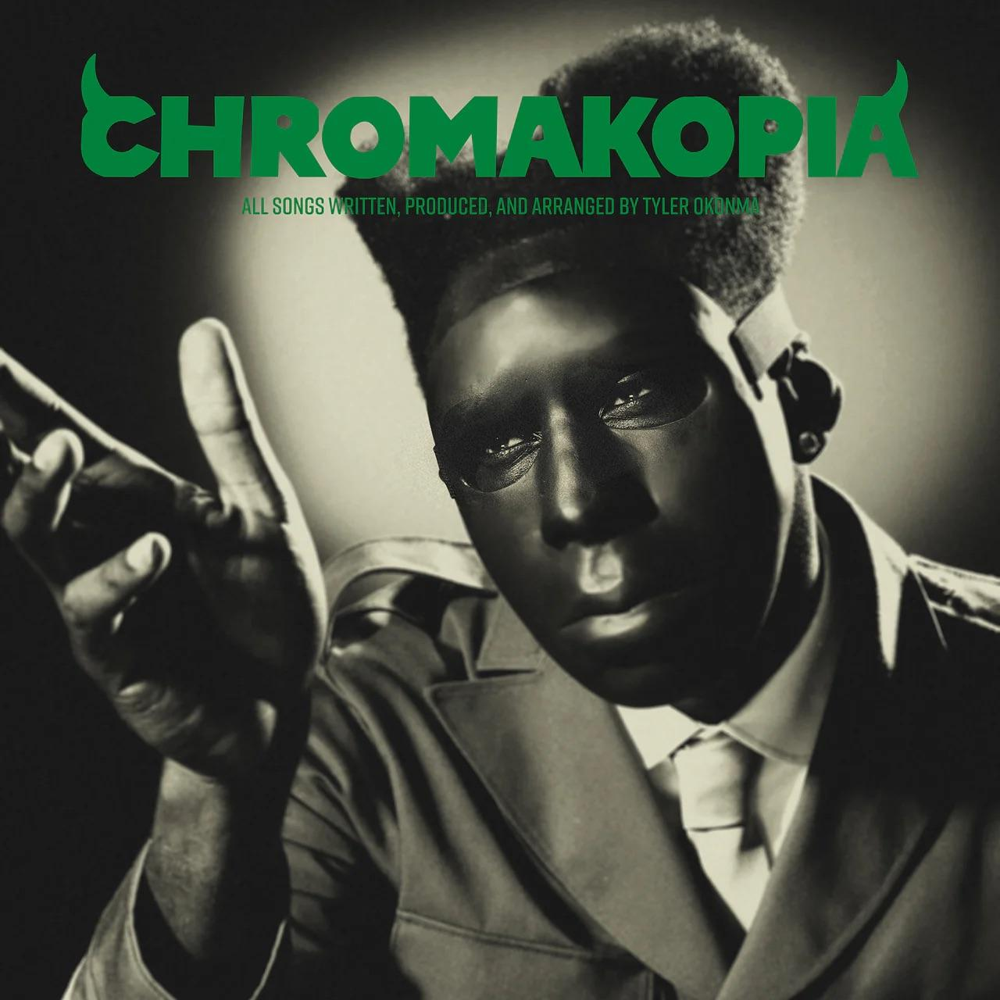

Nascido em Los Angeles, em 6 de março de 1991, mais conhecido como Tyler, The Creator, é um
dos artistas mais criativos e imprevisíveis da cena musical global. É rapper, produtor,
diretor, estilista, designer e praticamente tudo o que envolve arte e expressão.
Tyler começou chamando atenção como líder do coletivo de rap Odd Future, produzindo músicas
e criando toda a estética do grupo. Em 2009, lançou seu primeiro álbum, Bastard, e desde
então vem evoluindo a cada projeto, de Goblin e Wolf até os mais expoentes Flower Boy e
IGOR, misturando rap, soul e jazz de um jeito totalmente único.
Com dois Grammys de Melhor Álbum de Rap e uma legião de fãs pelo mundo, Tyler também comanda
sua marca de roupas, a Golf Wang, e o festival Camp Flog Gnaw Carnival, que reúne música,
moda e arte em um só lugar.
Gênio, provocador e dono de um estilo inconfundível, Tyler, The Creator é muito mais que um
músico, ele é um universo.
Sobre sua discografia, entenda logo abaixo.
GOBLINCONTEXTO
Lançado em 2011, Goblin apresenta Tyler emergindo como figura provocadora do Odd Future. É
seu primeiro álbum de estúdio solo por uma grande gravadora, consolidando seu nome na cena do
rap
dos EUA como um artista em ascensão, jovem, polêmico e com enorme potencial criativo.
ESTÉTICA E MUSICALIDADE
Horror-rap, batidas minimalistas, vozes graves e atmosfera claustrofóbica de “sessão de
terapia”.
SENTIMENTO
Raiva, frustração, depressão, solidão e um autoconhecimento agressivo, exposto de forma crua e
desconfortável.
NARRATIVA
A narrativa é guiada pelas conversas com Dr. TC, o “terapeuta” que funciona como a
consciência de Tyler. Em vez de uma história linear, o álbum é um mergulho na mente dele:
abandono
paterno, pensamentos violentos, impulsos autodestrutivos e o surgimento de alter egos que seriam
explorados nos álbuns seguintes.
Recomendação:

2011

2013
WOLFCONTEXTO
Em 2013, Wolf chega com Tyler já famoso, com o Odd Future consolidado e sob o olhar atento da
crítica. É um passo adiante em produção, composição e ambição, reforçando sua identidade como
artista
autoral.
ESTÉTICA E MUSICALIDADE
Rap misturado com jazz, soul, pianos e arranjos mais orgânicos, ambientados no universo fictício
de Camp Flog Gnaw, com clima de “filme” adolescente estranho e dramático.
SENTIMENTO
Ciúme, confusão emocional, nostalgia, frustração e a dor típica da adolescência tentando
amadurecer.
NARRATIVA
A história se passa em Camp Flog Gnaw, um acampamento para jovens problemáticos. Os personagens
principais são Wolf (mais calmo e observador), Sam (impulsivo, agressivo e ciumento) e Salem (o
interesse
amoroso que fica entre os dois). Dr. TC retorna como figura de autoridade. O triângulo
Wolf–Sam–Salem simboliza o conflito interno de Tyler, que luta com diferentes versões de si
mesmo.
Recomendação:

CONTEXTO
Marca a fase em que Tyler decide romper abertamente com expectativas e abraça a liberdade total
como produtor. Depois de construir um universo de personagens, ele passa a desconstruir sua
própria
imagem.
ESTÉTICA E MUSICALIDADE
Som caótico e distorcido, misturando rock, rap, jazz, soul, um album sonoramente barulhento com
momentos surpreendentemente suaves e melódicos.
SENTIMENTO
Euforia, ansiedade, irritação, inquietação criativa e o desejo de experimentar sem limites nem
aprovação externa.
NARRATIVA
Sem personas nomeadas e história clara mas entre a agressividade de faixas pesadas e a
delicadeza
de músicas como “Find Your Wings”, desmonta a persona antiga e abre caminho para uma fase mais
emocional
e refinada.
Recomendação:

2015
2017
FLOWER BOYCONTEXTO
Representa uma grande virada na carreira de Tyler. Ele passa a ser visto de forma mais séria
como compositor e produtor, deixando um pouco de lado o choque gratuito e abraçando a
vulnerabilidade.
ESTÉTICA E MUSICALIDADE
Cores quentes, flores, abelhas e paisagens ensolaradas, com um som que mistura rap, soul e jazz
de maneira suave, limpa e muito melódica.
SENTIMENTO
Solidão, tédio, saudade, desejo de conexão, dúvidas sobre identidade e um processo doloroso,
porém bonito, de autoaceitação.
NARRATIVA
Período da vida de Tyler: dirigindo sem rumo, entediado, pensando em amigos, amores e no próprio
lugar no mundo. Músicas como “See You Again” revelam conflitos internos, sentimentos reprimidos
e questionamentos sobre sexualidade e afeto. Não há personagens nomeados, mas o “flower boy” soa
como a versão mais sensível e introspectiva do próprio Tyler.
Recomendação:
IgorCONTEXTO
Consolida Tyler como um artista autoral e conceitual, recebendo reconhecimento massivo da
crítica e do público.
ESTÉTICA E MUSICALIDADE
Mistura de R&B, soul, funk e sintetizadores, com vocais distorcidos e um visual marcante: peruca
loira, ternos coloridos e uma atmosfera estranha, romântica e futurista ao mesmo tempo.
SENTIMENTO
Paixão intensa, obsessão, ciúme, frustração, negação e por fim, a libertação e aceitação do fim
de um relacionamento.
NARRATIVA
Tyler se apaixona por alguém que já está em outra relação. A história passa por três fases: o
encantamento inicial, a crise quando a “outra pessoa” entra em cena e a ruptura, na qual ele
entende que precisa deixar esse amor ir. IGOR representa o lado mais carente e obsessivo de
Tyler, vivendo esse amor impossível até chegar ao final.
Recomendação:

2019

2021
CONTEXTO
Traz um Tyler já consagrado, voltando a rimar com força enquanto mantém toda a evolução
emocional dos álbuns anteriores. É a fase em que ele assume totalmente o papel de estrela
global e viajante do mundo.
ESTÉTICA E MUSICALIDADE
Narrada por DJ Drama, é uma "mixtape de luxo", viagens, cartões-postais e uma identidade visual
que mistura elegância, aventura e ostentação.
SENTIMENTO
Confiança, arrogância divertida, liberdade criativa, mas também inseguranças amorosas e
conflitos íntimos que aparecem por baixo da camada de luxo.
NARRATIVA
Tyler assume a persona de Tyler Baudelaire, um viajante elegante que roda o mundo e vive
romances complicados. DJ Drama costura o álbum como narrador, dando a sensação de acompanharmos
o diário de viagem emocional e geográfico de Tyler.
Recomendação:
Call Me If You Get Lost: The Estate
SaleCONTEXTO
Funciona como uma expansão do universo do álbum principal. São faixas que ficaram de fora da
versão original, mas que ajudam a completar o retrato dessa fase da vida e da mente de Tyler.
ESTÉTICA E MUSICALIDADE
Mantém a sonoridade e o clima de Call Me If You Get Lost, mas com a cara de “arquivo de luxo”,
misturando romance e introspecção.
SENTIMENTO
Arrependimento, desapego, orgulho do caminho percorrido e vontade de seguir adiante em uma nova
fase.
NARRATIVA
O destaque fica para “SORRY NOT SORRY” onde Tyler enfrenta seu próprio passado e suas múltiplas
personas. No clipe e na letra, ele pede desculpas a pessoas e fases da vida enquanto “mata”
visualmente versões antigas de si mesmo. É um epílogo emocional que encerra o capítulo de Tyler
e prepara o terreno para o próximo ciclo.
Recomendação:

2023

2024
CONTEXTO
Tyler entra em uma fase ainda mais madura, olhando para trás com calma e profundidade. Depois
de se despedir de várias personas, ele volta às origens para contar sua própria história de
forma
quase autobiográfica.
ESTÉTICA E MUSICALIDADE
Produção rica e cheia de camadas, misturando hip-hop, soul, R&B e jazz, com intervenções faladas
de sua mãe que dão ao álbum a sensação de um filme de família.
SENTIMENTO
Nostalgia, gratidão, dor elaborada, amadurecimento e reconciliação com a própria história e com
as figuras que marcaram sua vida.
NARRATIVA
Mãe de Tyler, Bonita Smith, atua como narradora, costurando memórias da infância, adolescência e
juventude dele. Ao longo das faixas, aparecem o Tyler criança, o Tyler adolescente e o artista
adulto, lidando com a ausência do pai, com o ambiente em que cresceu e com as escolhas que fez.
O álbum acompanha o arco de “não entender”, “revisitar” e “aceitar” sua própria trajetória.
Recomendação:
Don't Tap The GlassCONTEXTO
Apresenta um Tyler já totalmente consolidado, em uma fase em que ele pode se dar ao luxo de
focar mais na diversão e na pista, sem precisar provar nada para ninguém em termos de
relevância.
ESTÉTICA E MUSICALIDADE
Vibe de dance/club, com influências de electro, funk, synths e energia de festas, remetendo a
sons dos anos 80/90, mas com a cara do Tyler.
SENTIMENTO
Euforia, leveza, humor, arrogância bem-humorada, mas com momentos em que surgem rachaduras de
vulnerabilidade.
NARRATIVA
O álbum funciona como uma noite em uma pista de dança em que Tyler é o mestre de cerimônias. O
título sugere não cutucar demais, não tentar controlar e analisar tudo o tempo todo. A proposta
é viver o som mas, para quem presta atenção, ainda há confissões pessoais espalhadas pelo meio
da festa.
.jpeg)